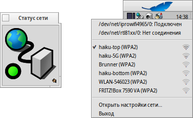

Статус сети (NetworkStatus)
Статус сети (NetworkStatus)
| Расположение в Deskbar: | ||
| Расположение в Tracker: | /boot/system/apps/NetworkStatus | |
| Настройки хранятся по адресу: | отсутствует |
Апплет Статус сети (NetworkStatus) отображает состояние вашего сетевого соединения. Если апплет ещё не запущен, то при его запуске вам будет предложено запустить его в окне, либо установить в Deskbar. В оконном режиме вы сможете изменить размер иконки изменив размер окна, а т.к. данный апплет является репликантом, то вы сможете поместить его на рабочий стол.
Правый щелчок мыши вызовет контекстное меню.

Первая секция содержит список всех сетевых устройств и их состояние. Кликнув по любому из них вы вызовете окно, в котором будут указаны IP-адрес, шлюз и маска сети.
Ниже находится список всех найденных беспроводных сетей, также уровень их сигнала. Для более подробного изучения работы с беспроводными сетями обратитесь к главе Семинар: Беспроводные сети.
В нижней секции находятся пукнты:
, который вызывает окно настроек сети.
- завершает работу апплета.
Значки состояния
| Подключен | Соединение установлено. | ||
| Устанавливается соединение | Выполняется подключение. | ||
| Неправильные настройки | Некоторые настройки отсутствуют (для более подробного изучения обратитесь к теме Настройка сети). | ||
| Нет соединения | Физическое подключение отсутствует (возможно, сетевой кабель не подключен и отсутствуют беспроводные сети). | ||
| - | Отсутствует сетевая карта (если вы уверены, что сетевая карта подключена, то, возможно, для неё отсутствует драйвер). |